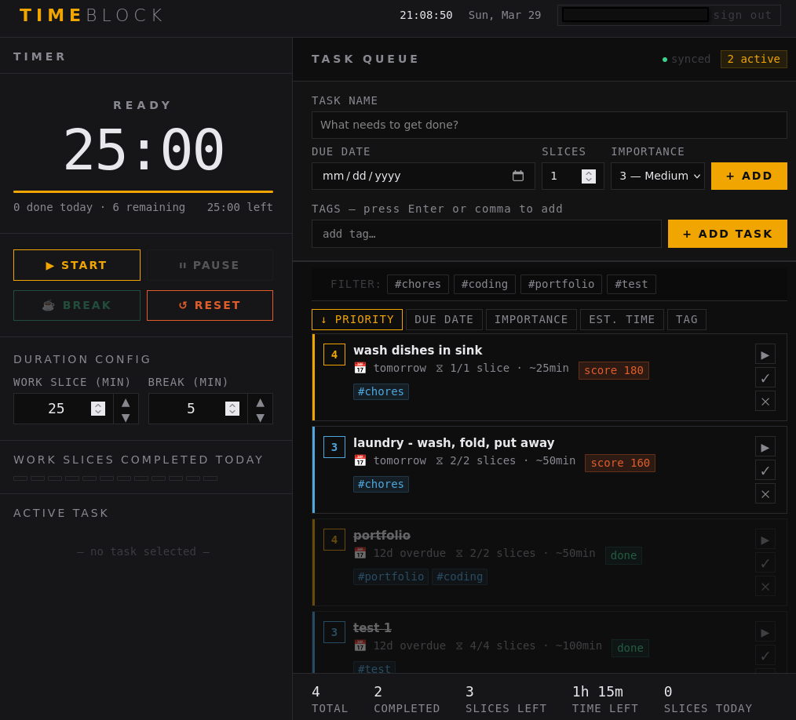
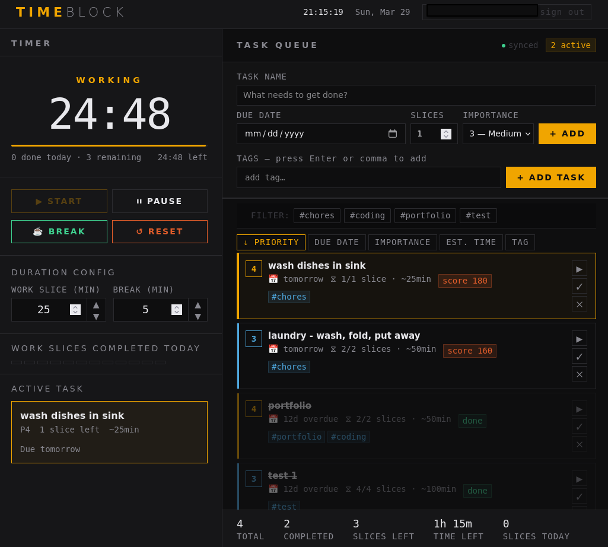

TIMEBLOCK is a personal productivity app that combines a Pomodoro timer, task prioritization, and a tag system into one minimal interface — synced across devices via Supabase. I built it because nothing else worked the way my brain does. I still use it every day.

Productivity tools tend to solve one problem well and ignore the rest. Pomodoro apps don't connect to your task list. Task managers don't help you focus. Tag systems exist in isolation.
The result is a pile of apps that each do something useful but don't talk to each other — and the fragmentation itself becomes the thing getting in the way of getting things done. I wanted one tool that held it all together without making me think about the tool.
TIMEBLOCK keeps it simple by design: a Pomodoro timer attached to an actual task list, with priority levels and tags so you always know what to work on next and why.
Supabase handles sync so your tasks and progress follow you across devices without any manual export or copy-paste. The UI is deliberately minimal — the goal was to make the tool invisible, something you open, use, and close without friction.

I built TIMEBLOCK in plain HTML, CSS, and JavaScript — a deliberate choice. No framework overhead, no build pipeline to wrestle with, just fast and direct.
The design decisions came from using the tool myself: every feature that made it in solved a frustration I'd actually experienced, and everything that didn't make the cut was something that sounded useful but added noise. Building for yourself is a useful filter — you can't hide from bad UX when you're the one living with it.
TIMEBLOCK shows how I think about design when the user is someone I know well — me. The same instincts apply when I'm working with a client: start with the real friction, build only what solves it, and make the result feel effortless to use. A tool nobody has to think about is a tool that actually gets used.
TIMEBLOCK started as a solo tool and still feels like one. If I were building it again with a wider audience in mind, I'd add light onboarding — a way to help someone new understand the Pomodoro + priority + tag system without having to figure it out themselves. The logic is intuitive once you're in it, but the first five minutes could be smoother.